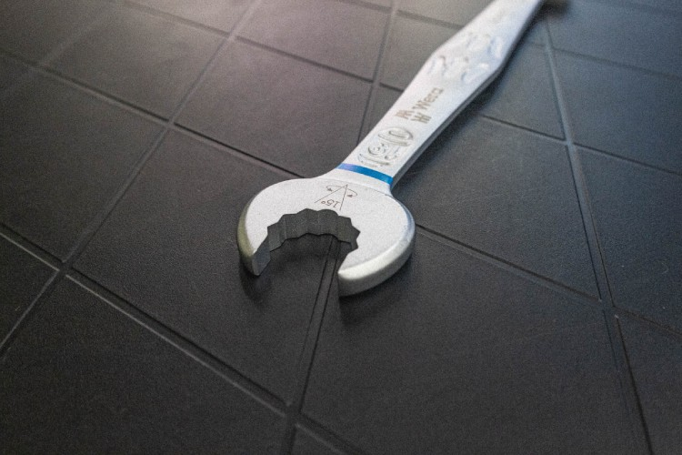
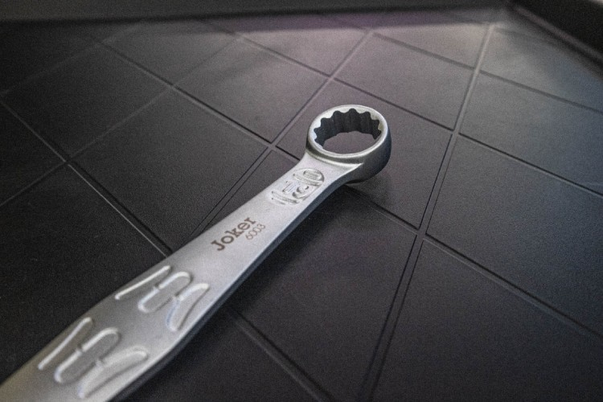
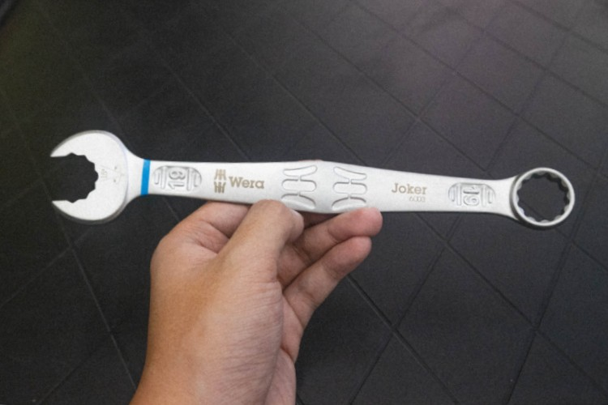

10 เครื่องมือช่าง พื้นฐานในงานช่างยนต์ มีอะไรบ้างที่ช่างควรรู้
10 เครื่องมือช่างยนต์ พื้นฐาน มีดังนี้

1. ประแจปากตาย (Open end wrench)
ประแจชนิดนี้มีลักษณะเป็นเหล็กชิ้นเดียว มีปากเปิดสองด้านหัวท้ายที่มีขนาดต่างกัน มีลักษณะปากจับเป็นรูปตัวยู U ซึ่งช่วยให้สามารถใช้งานกับน็อตและสกรูขนาดต่างๆ ได้โดยไม่ต้องเปลี่ยนเครื่องมือ ปากเปิดทั้งสองด้านถูกออกแบบมาให้จับยึดน็อตและสกรูได้แน่นหนา ช่วยให้สามารถใช้แรงบิดในการขันหรือคลายได้อย่างมีประสิทธิภาพ เหมาะสำหรับการใช้งานสำรหับซ่อมเครื่องยนต์ เครื่องกลทั่วไป โดยการนำมาใช้งานจะต้องเลือกขนาดของประแจให้ตรงกับหัวน๊อต สกรู หกเหลี่ยม ข้อควรรู้เมื่อใช้งานไประยะหนึ่งอาจทำให้เหลี่ยมมนได้ง่าย หากใช้งานประแจกับหัวน๊อตที่ไม่ตรงขนาด ข้อดีของประแจปากตายคือใช้จับหรือขันและยังสามารถใช้แทนประแจแหวนได้ในบางกรณีที่พื้นที่เข้าถึงได้น้อย

2. ประแจแหวน (Box End Wrench)
ประแจแหวนทั่วไปแล้วมีลักษณะคล้ายกับประแจปากตาย หรืออีกแบบจะมีข้องอ ออกมาจากด้ามจับ แต่ส่วนของปากกประแจจะเป็นวงแหวน มีรอยบากเป็นเขี้ยวรอบวงประมาณ 6 - 12 เขี้ยวเพื่อสำหรับยึดจับหัวน็อตหรือสกรู มีข้อดีคือทำให้เหลี่ยมไม่มนง่าย จับขันได้แน่น ด้วยการออกแบบให้สามารถเข้าถึงน็อตและสกรูในพื้นที่จำกัดได้ดี มีข้อดีอีกอย่างคือใช้แรงบิดในการขันหรือคลายได้มากกว่าประแจปากตาย ด้วยฟันรอบวงแหวนที่ยึดน็อตและสกรูได้แน่นหนา สามารถใช้แรงบิดในการขันหรือคลายน็อตและสกรูได้มากกว่าประแจปากตาย ช่วยป้องกันการลื่นของเครื่องมือขณะใช้งาน แต่บางครั้งก็เข้าที่แคบได้ยากกว่าหากมีด้ามจับแบบข้องออยู่ที่การเลือกใช้งานด้วย

3. ประแจรวม (Combination wrench)
ประแจรวมส่วนใหญ่จะถูกออกแบบให้ข้างหนึ่งเป็นประแจปากตาย (Open-End) ส่วนอีกข้างหนึ่งจะเป็นประแจแหวน (Box-End) ซึ่งในแต่ละข้างมักจะมีขนาดที่เท่ากัน ทำให้สามารถใช้งานได้ทั้งสองแบบในเครื่องมือเดียวเนื่องจากสามารถใช้งานได้สองแบบในเครื่องมือเดียว ทำให้ไม่ต้องพกพาเครื่องมือหลายชิ้น ด้วยการที่มีข้อดีของทั้งสองประแจรวมเข้าด้วยกัน แต่ยังมีข้อจำกัดการใช้งานอยู่บ้างหากใช้ประแจขนาดที่ไม่พอดีอาจจะต้องเลือกใช้ขนาดอื่นแทน ไม่เหมือนประแจที่เป็นตัวหลักที่มักจะมีขนาดต่างกันทั้งสองด้านนั่นเอง